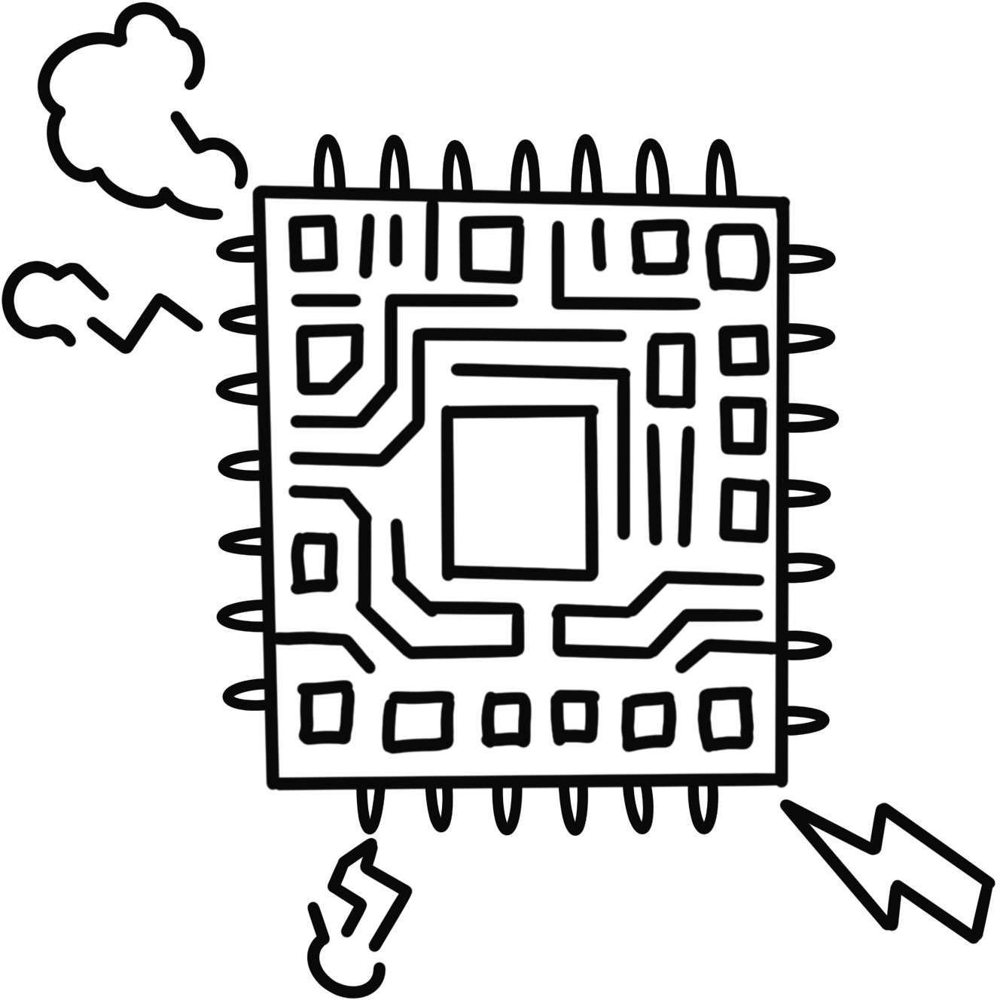

In the future society, memory chip technology has been rapidly developing, memory is no longer a product of organic learning, but a product that can be purchased, edited or deleted without any difficulty. Memory chip services provided by powerful technology companies promise intelligence enhancement, emotional healing, and even personality adjustment.
A student at a school stressed by the pressure of upcoming final exams, he chose a quick fix. He paid a high fee to a well-known technology company who implanted the knowledge needed for the exam directly into his brain.
But on the day of the exam, something goes terribly wrong.
Just moments after the test begins, he clutches his head in pain. A searing headache floods his senses, and then—blankness. His mind is wiped clean. Everything, even basic knowledge, seems to dissolve. He stares at the test paper, now a meaningless sheet of ink, and hands it in empty. He fails.
Enraged and confused, he files a complaint. After a series of inspections, the company casually blames a "rare short circuit" in the chip. Yet soon, similar incidents begin to surface globally—students, professionals, even politicians, all suffering from inexplicable memory loss tied to implanted chips.
Amid growing public panic, the government is forced to intervene. The chip company, under scrutiny, initiates a massive recall. A formal investigation is launched.

Chip short circuit, memory vanishes in an instant!
The truth of the expert investigation
Behind the scenes, a senior engineer at the chip company uncovers a darker truth.
During an internal audit, he finds that the company’s memory chips were manufactured with substandard raw materials—cheap, unstable components from a shady supplier. Worse still, the company had full knowledge of this and chose silence over safety.
When he reports his findings to upper management, he’s stonewalled, marginalized, and ultimately fired under false pretenses.
Privately, he begins his own investigation. What he finds is staggering: the company has been secretly manipulating users’ memories via a hidden backend. Memories unfavorable to the company—complaints, scandals, abuses—have been stealthily erased or altered. Victims have been turned into oblivious bystanders.
Determined to expose the truth, the engineer prepares to submit the evidence to the authorities. But on the day of his meeting with the government, he is kidnapped. When he regains consciousness, he finds himself safe—but hollow. His mind has been wiped. All his findings, memories, and motivations are gone.
The people behind the kidnapping? The very company he once worked for.
They control not just memory, but truth itself.
Weeks pass. The engineer resumes life as if nothing had happened. But one afternoon, while sorting through old boxes in his home, he finds a hidden diary. It’s his handwriting. Every page is a revelation: diagrams, time logs, supplier records, victim testimonies. Slowly, pieces of the puzzle begin to return.
Recovered Diary
The diary detailedly recorded the truth he discovered, the evidence he collected, and everything they tried to erase.
With the help of his own written words, he rebuilds his lost memory. He contacts other victims—students, ex-employees, whistleblowers—and together they reconstruct the full scale of the conspiracy.
Eventually, they succeed. A joint public release of evidence shakes the world. The memory chip company's executives are tried and convicted. Global headlines erupt. For the first time, humanity truly confronts the question: who owns memory?
Who holds our memories?
The case becomes a defining moment of the century—a digital scandal on par with Watergate or Cambridge Analytica. Scholars, lawmakers, activists, and ordinary citizens all weigh in.
At a televised global forum, one young activist delivers a haunting message:
“Technology can change our memory, but we cannot hand over the sovereignty of memory to capital and algorithms.”
Her words go viral.
People begin to reflect deeply on the nature of memory in a digitized age. What happens when the most intimate parts of our lives—our childhoods, traumas, love stories, and failures—can be edited, sold, or deleted by corporations?
The scandal ignites new movements:
The Right to Remember Act, passed in multiple countries, protects personal memory data as a form of human rights.
Open Memory Protocols become mandatory in chip design.
Grassroots projects form to help victims recover lost memory fragments.
But beyond law and politics, the case stirs something more profound. Around the world, people begin keeping written journals again. Families document oral histories. Children are taught about “memory hygiene” in school.
Because even in a world of implants and artificial recall, one truth remains: